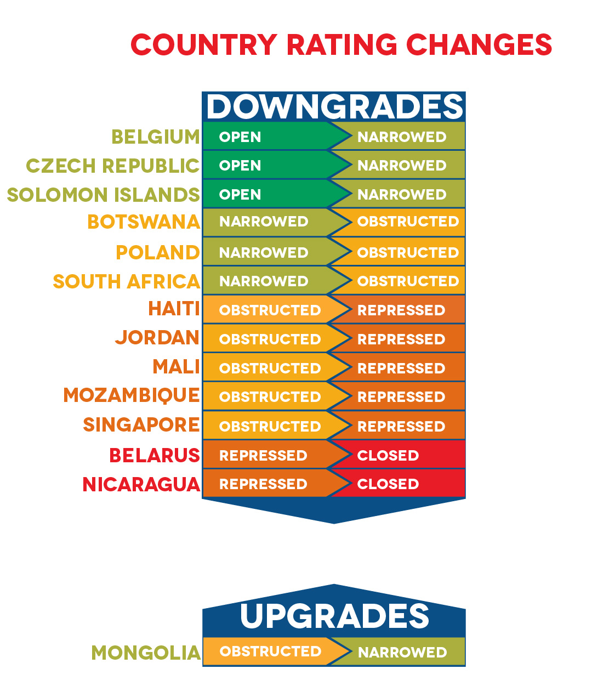

Defending Rights as Civic Space Continues To Deteriorate
Civil society organisations (CSOs) and individuals – activists, journalists and other human rights defenders (HRDs) – play a fundamental role in safeguarding democracy, human rights and the rule of law. When people take action, they can ensure that civic and democratic freedoms are guaranteed and respected. Often, activists, groups and movements have scored major victories that have led to the creation of more democratic and equal societies.
Every year, however, this work becomes harder as states continue to restrict the space for action. The number of people living in countries with serious restrictions has increased, and today, 88.5 per cent of the world’s population lives in countries rated as closed, repressed, or obstructed.
The concerning picture the CIVICUS Monitor data is showing is that, year after year, there is strictly limited space for almost all people to exercise fundamental freedoms: only 3.1 per cent of the world’s population lives in countries rated as open.
The latest update of CIVICUS Monitor ratings in November 2021 indicates that civil society continues to work in an increasingly hostile environment. Our data shows that there are 25 countries with closed civic space, 49 with repressed space, and 43 with obstructed space, meaning that 117 of 197 countries are assessed as having serious civic space restrictions. In comparison, 41 countries are rated as having narrowed civic space and just 39 countries have an open rating.
Since our previous report, published in December 2020, the story is one of further regression: civic space ratings have changed for 14 countries in the last year. They have worsened in 13 countries and improved in only one.
